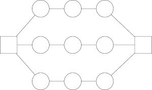

Security Information
In the field of cyber technology, there are many branches of security. ProtoNet focuses on network design and the security aspects surrounding this area.
How a network is designed plays a large role in its overall security posture. A poorly designed network will result in a rapid spread of malware, which will jeopardize any affected machines and potentially the entire network.
In an effort to ensure that ProtoNet is used effectively, we have outlined below how ProtoNet determines the most secure network layout and how this differs from an efficient one.
In ProtoNet, a network with efficiency selected will prioritize data rate transfer across the network. This typically results in a network where nodes have many connections between them, while still being readable.
Within the scope of ProtoNet, a secure network is defined as a network that has a layout that will reduce the impact of malware attempting to spread across it. There are many different ways to configure a network to do this, but they will all attempt to adhere to the following guidelines:
- Minimize the number of connections between nodes. This reduces the number of nodes that malware could quickly infect.
- Avoid connecting individual nodes to multiple servers. In the event of an infection, this would help prevent spreading malware to these servers. This would keep the data on these devices safe, as well as prevent the spread of malware to all other nodes directly connected to those servers.
The overall aim is to create distance between individual nodes and centralized nodes. Following these guidelines often results in generating network configurations that are variations of the star or mesh topologies. This will be dependent upon the number of servers the network has. Below are some example network designs that ProtoNet may generate.
This is an example of a secure configuration with one server. It is a variation of a star topology where each node connected to the server has additional connections to additional nodes. This minimizes the number of nodes that are directly connected to the server and provides distance between many of the network's nodes and the central server.
If a randomly selected node is infected with malware or ransomeware, this configuration would help prevent the infection from quickly propagating across the rest of the network. This delay gives the network professional an opportunity to detect and address the infection, minimizing any potential damage.

This configuration is similar to the previous one, except there is an additional server included. However, each centralized node needs special consideration when designing a secure network layout. This is because any malware that reaches a centralized node will be able to very quickly spread across the entire network. For this reason, the servers are not directly connected to each other, so that if one is compromised, additional servers are not immediately compromised as well.
This layout still has a low average node-to-server distance, while utilizing the additional resources that the second server provides.